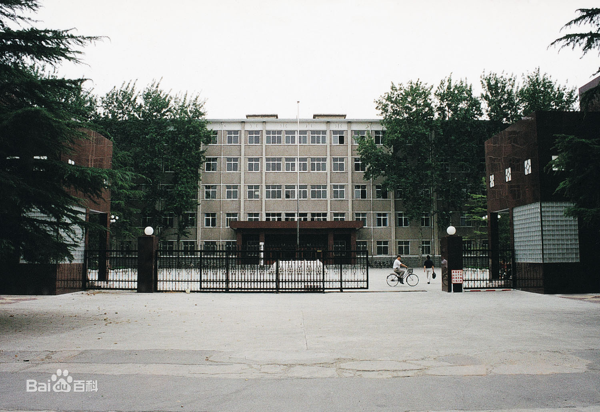
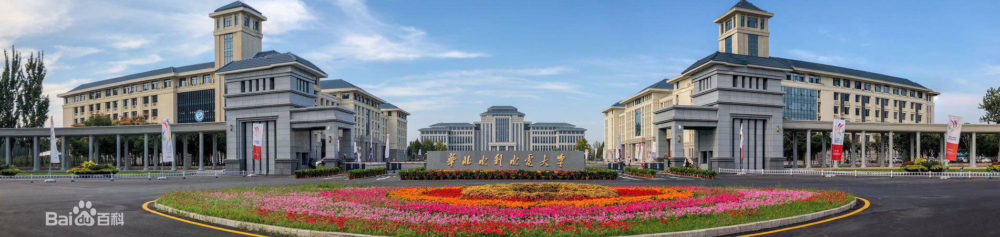
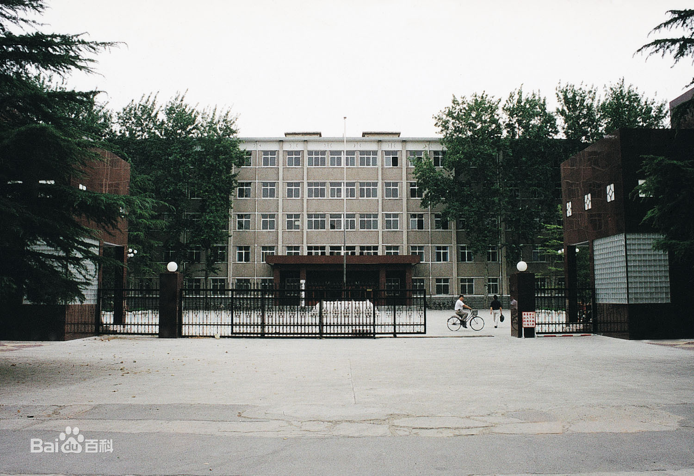
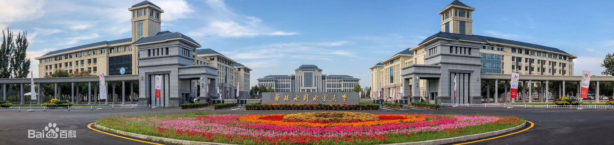

办学历程
北京时期

 



新中国成立初期，由当时的水利部部长傅作义于1951年主持创建了学校的前身—水利部北京水利学校。 1951年9月15日，中央人民政府水利部在北京创办的水利部水利学校正式开学，校址设在阜城门内巡捕厅十号（今民康胡同）。 1953年9月，北京水利学校迁入北京市西郊花园村新建校舍(原华北水利水电学院北京研究生部所在地)。 1954年，学校改名为北京水利学校。 1958年10月6日，北京水利学校与北京水利发电函授学院、北京水力发电学校合建北京水利水电学院，在北京市东郊定福庄举行成立大会。院长由北京水利水电科学研究院院长张子林兼任。10月6日确定为校庆日。 1958年起，先后接受越南、尼泊尔、印度尼西亚、喀麦隆等国留学生（1966年停止，2004年恢复）。 1959年7月23日，北京水利水电学院一部收归水利电力部直接领导，恢复北京水力发电学校。 1960年，学校受水利电力部委托负责援建越南水利水电学院。 1963年，哈尔滨建筑工程学院（后更名哈尔滨建筑大学，已并入哈尔滨工业大学）河川枢纽及水电站建筑专业合并到该校，同年开始招收研究生。 1966年4月，周恩来总理来河北地震地区视察，座谈时了解到华北缺乏水利人才，于是提出了将北京水利水电学院从北京迁至邯郸的建议。5月30日，水利电力部致河北省委、省革委将北京水利水电学院迁往河北省邯郸市磁县岳城水库工地。 1966年，“文化大革命"开始，学院陷于混乱，停止招生。
岳城时期
1969年，奉命迁往河北省磁县岳城水库和河南省林县。十三所京校外迁高校之一。 1970年3月20日，水利电力部军管会致河北省革委会将北京水利水电学院交由河北省领导。 1970年12月23日，北京水利水电学院改名为河北水利水电学院。 1971年1月1日起，启用河北水利水电学院新校名。
邯郸时期
1972年11月7日，河北水利水电学院在邯郸中华大街南头建校，岳城保留教学点，改由水利电力部与河北省双重领导，以水利电力部为主。 1977年，经国务院批准，在北京西郊花园村原北京水利水电学院旧址成立华北水利水电学院北京研究生部，由华北水利水电学院和水利水电科学研究院双重领导，并于2月正式开学。 1978年9月28日，河北水利水电学院改名为华北水利水电学院。 1980年1月3日，撤销岳城教学基地。 1981年11月，国务院批准华北水利水电学院为首批硕士学位授予权单位。 1983年12月，根据水利电力部指示，华北水利水电学院北京研究生部划归北京水利电力经济管理学院领导，对外仍称华北水利水电学院北京研究生部。 1984年9月23日，水利电力部同意汪胡桢任华北水利水电学院名誉院长。 1987年6月30日，国家教委同意将华北水利水电学院成建制地由河北省邯郸市迁至河南省郑州市。
郑州时期
1990年7月22日，华北水利水电学院在郑州市河南省科技馆举行信息发布会，宣布学校1990年开始搬迁郑州。9月6日，由国务院总理李鹏题写的“华北水利水电学院”新校牌揭幕仪式在郑州新校隆重举行。 华北水利水电学院时期校门 华北水利水电学院时期校门 1991年9月1日，校本部迁郑办公。遗留校舍和人员组建华北水利水电学院（邯郸）。 1992年5月，经水利部批准，在华北水利水电学院北京研究生部、北京水利电力函授学院和中共水利部直属机关党校的基础上成立北京水利水电管理干部学院。 2000年2月28日，华北水利水电学院由水利部管理为主调整为实行“中央与地方共建，以河南省管理为主”的管理体制。10月，教育部批准学校硕士研究生单独考试权资格。 2001年，华北水利水电学院北京研究生部和北京水利电力函授学院、国家建材局管理干部学院（武汉工业大学北京研究生部）并入北京工业大学。6月15日，学校成立研究生处，即华北水利水电学院研究生处。 2002年4月建，教育部批复同意华北水利水电学院邯郸分部并入河北建筑科技学院。 2003年3月25日，河南省计划委员会批复同意该校在龙子湖高校园区选址设新校区，总征地面积1770亩。 2004年5月23日，河南省教育厅同意华北水利水电学院恢复招收来华留学生。 2005年，在教育部普通高等学校本科教学工作水平评估中获得优秀。 2009年8月，河南省政府和水利部在北京签订《关于共建华北水利水电学院的协议》，成为河南省继郑州大学、河南大学后第三所省部共建大学。 2011年，学校成为教育部第二批卓越工程师培养计划高校。 2012年8月，学校入围国家教育部中西部高校基础能力建设工程。12月，学校获得招收港澳台地区本科学生资质。 2013年4月，华北水利水电学院更名为华北水利水电大学。7月，经国务院学位委员会审批通过，华北水利水电大学获批新增为博士学位授予单位。 2015年12月，教育部《关于确认“金砖国家网络大学”项目中方参与院校的通知》文件，学校被正式确定为“金砖国家网络大学”项目中方参与高校。 2016年3月，华北水利水电大学成为“金砖国家大学联盟”成员，获批水利部“国家水情教育基地”。 2018年，华北水利水电大学乌拉尔学院获教育部批准。 2020年7月，学校入选高校心理健康教育试点单位名单。8月，学校与信阳市人民政府校地战略合作协议，共建华北水利水电大学江淮校区，被确定为河南省特色骨干大学。